🧪 Lab 3 · سير عمل جاهزة للتجربة — Flows You Can Try
n8n من الصفر · Class 3 — خمس أتمتة حقيقية: تستوردها، تربط حسابك، تشغّلها، ثم تغيّرها لتصبح لك.
🎯 الهدف / Goal
في نهاية هذا التمرين سيكون عندك 5 أتمتة تعمل على n8n Cloud:
| الجزء | الملف | ماذا تفعل؟ |
|---|---|---|
| 3.1 | form-to-sheet-email.json |
📝 نموذج تواصل ← سطر في Google Sheets ← بريد لك |
| 3.2 | daily-weather-email.json |
☔ كل صباح 7:00: «خذ المظلة» أو «يوم جميل» (عقدة IF) |
| 3.3 | webhook-alert.json |
🔔 طلب جديد عبر Webhook ← تنبيه فقط إذا كان المبلغ أكبر من 100 |
| 3.4 | news-digest.json |
📰 أهم 5 أخبار من BBC عربي في بريد واحد كل صباح 8:00 |
| 3.5 | error-alert.json |
🚨 «كاشف الدخان»: بريد لك عند فشل أي أتمتة |
وستتدرّب على: ربط الحسابات (Credentials)، قراءة الطرق (true / false)، الفرق بين Test URL و Production URL، وقراءة الأخطاء.
✅ قبل أن تبدأ / Before you start
- ☐ حساب n8n Cloud يعمل، وأنت داخل المحرّر (راجع n8n.io/pricing لمعرفة مدة التجربة المجانية الحالية).
- ☐ حساب Gmail شخصي (حسابات العمل/المؤسسات قد تمنع ربط التطبيقات الخارجية).
- ☐ ملفات التمرين من مجلد
lab/محفوظة على جهازك. - ☐ تبويب متصفح مفتوح على https://hoppscotch.io (للجزء 3.3).
📥 طريقة الاستيراد (لكل الأجزاء) / How to import
- من الصفحة الرئيسية (Overview) اضغط Create workflow ← يفتح محرّر فارغ.
- بجانب اسم سير العمل (أعلى يسار المحرّر) اضغط ⋯ ← Import ▸ From file ← اختر ملف الـ JSON. - طريقة بديلة: افتح ملف الـ JSON بأي محرّر نصوص، انسخ كل النص (Ctrl+A ثم Ctrl+C)، ثم اضغط على اللوحة الفارغة والصق (Ctrl+V).
- 👀 ستشاهد: العقد مرتّبة من اليسار لليمين، وفوقها ملاحظة لاصقة (Sticky note) تشرح الفكرة بالعربي. العقد التي تحتاج حساباً عليها مثلث أحمر ⚠️ — هذا طبيعي.
🔑 طريقة ربط حساب Google (مرة واحدة فقط) / How to connect Google
- افتح العقدة (نقر مزدوج) ← في الأعلى حقل Credential.
- اضغط Connect to Gmail (أو Create new credential) ← ثم Sign in with Google.
- اختر حسابك ← إذا ظهرت مربعات صلاحيات، ضع علامة على كل المربعات ← Allow / Continue.
- 👀 ستشاهد: رسالة Account connected ✅. أغلق النافذة.
- في المرات القادمة: لا تصنع مفتاحاً جديداً — فقط اختر نفس المفتاح من القائمة المنسدلة في حقل Credential.
💡 Gmail و Google Sheets مفتاحان منفصلان، لكن الخطوات نفسها. 🔒 لا تكتب أي كلمة سر داخل الحقول أو الملاحظات. مكان المفاتيح الوحيد هو Credentials.
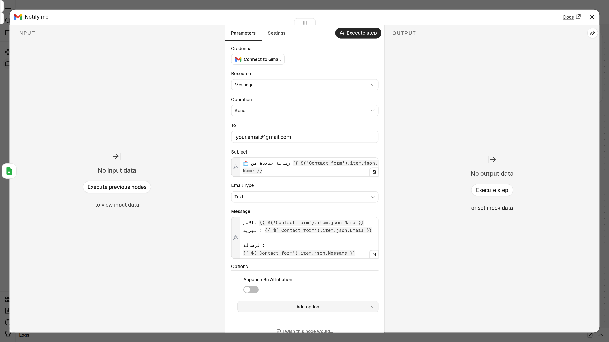
🪜 الخطوات / Steps
📝 الجزء 3.1 — نموذج تواصل ← جدول ← بريد · form-to-sheet-email.json
القصة: رسائل الزبائن تضيع بين الواتساب والإنستغرام. نريد نموذجاً واحداً، كل رد يُحفظ في جدول ويصلنا على البريد.
أ) جهّز الجدول في Google Sheets
- افتح https://sheets.new (بنفس حساب Google) ← جدول جديد.
- سمِّه مثلاً
Contact form replies(اضغط على «Untitled spreadsheet» في الأعلى). - اكتب في السطر الأول بالضبط — الحروف الكبيرة مهمة:
- الخلية
A1:Name- الخليةB1:Email- الخليةC1:Message - 👀 ستشاهد: ثلاثة عناوين في السطر الأول، والباقي فارغ.
ب) استورد واربط
- استورد
form-to-sheet-email.json(انظر «طريقة الاستيراد» بالأعلى). 👀 ستشاهد: ثلاث عقد: Contact form ← Save to sheet ← Notify me.
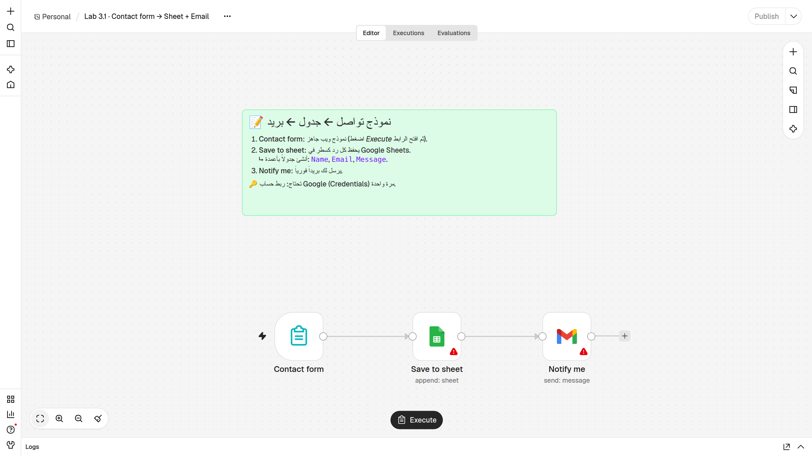
- افتح Save to sheet ← Credential ← اربط Google Sheets بـ Sign in with Google.
- في نفس العقدة: Document ← From list ← اختر
Contact form replies. - Sheet ← اختر الورقة الأولى (
Sheet1أوورقة1). - تأكّد أن Mapping Column Mode = Map Automatically (موجود مسبقاً). أغلق العقدة. 👀 ستشاهد: اختفى المثلث الأحمر عن Save to sheet.
- افتح Notify me ← Credential ← اربط Gmail (أو اختره إن كان موجوداً).
- في حقل To امسح
your.email@gmail.comواكتب بريدك أنت. أغلق العقدة.
ج) شغّل وجرّب
-
اضغط زر Execute workflow في أسفل اللوحة (في n8n 2.45 مكتوب عليه Execute فقط). 👀 ستشاهد: يفتح n8n النموذج في تبويب جديد، وفي أعلاه «This is a test version of your form». > إذا لم يفتح التبويب (المتصفح منع النوافذ المنبثقة): افتح عقدة Contact form ← انسخ Test URL ← الصقه في المتصفح.
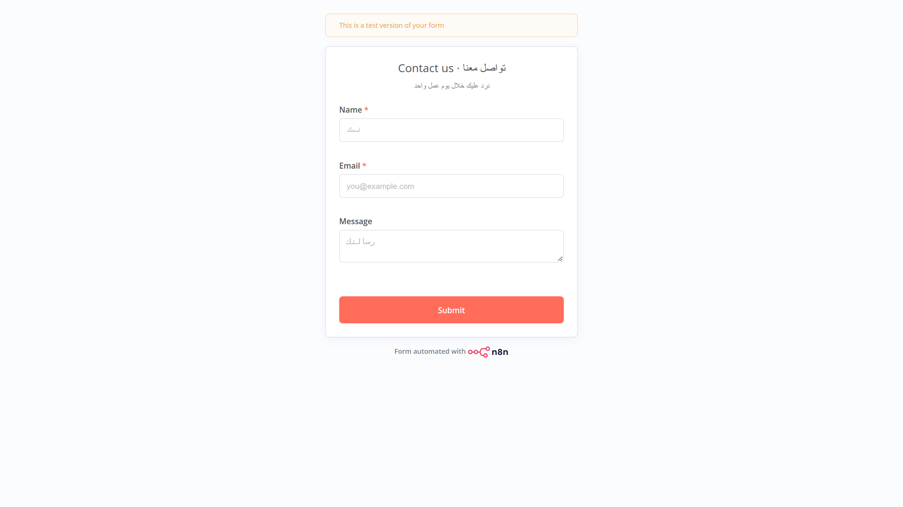
-
املأ Name و Email و Message ثم اضغط Submit. 👀 ستشاهد: رسالة تأكيد أن الرد وصل.
- ارجع إلى n8n.
👀 ستشاهد: العقد الثلاث خضراء ✅ وعلى الأسلاك
1 item. - افتح الجدول ← سطر جديد فيه بياناتك. وافتح بريدك ← رسالة عنوانها «📩 رسالة جديدة من …».
ℹ️ قد تظهر في الجدول أعمدة إضافية مثل
submittedAt(وقت الإرسال) وformMode(test/production). هذا طبيعي: n8n يضيف أي حقل لا يجد له عموداً. لإيقاف ذلك: Save to sheet ← Options ← Handling extra fields ← Ignore Them.
د) اجعله حقيقياً (اختياري)
- اضغط Publish (أعلى اليمين). ثم افتح Contact form ← تبويب Production URL ← هذا هو الرابط الذي تشاركه مع زبائنك؛ يعمل دائماً دون الضغط على Execute.
☔ الجزء 3.2 — بريد الطقس اليومي · daily-weather-email.json
القصة: كل صباح الساعة 7:00 يسأل n8n عن الطقس، ثم تقرّر عقدة IF: هل احتمال المطر أكبر من 50٪؟
- استورد
daily-weather-email.json. 👀 ستشاهد: Every day 7:00 ← Forecast ← Rain likely? ثم طريقان: true ← Umbrella email و false ← Sunny email.
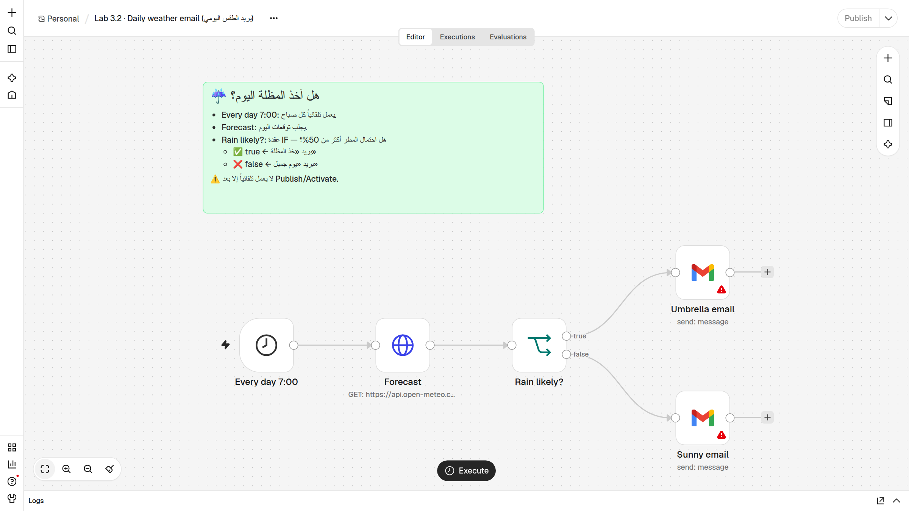
- (اختياري) افتح Forecast ← Query Parameters ← غيّر
latitudeوlongitudeلمدينتك. الافتراضي عمّان:
| المدينة | latitude | longitude |
|---|---|---|
| عمّان | 31.95 | 35.93 |
| إربد | 32.56 | 35.85 |
| الرياض | 24.71 | 46.68 |
| جدة | 21.49 | 39.19 |
| دبي | 25.20 | 55.27 |
| الدوحة | 25.29 | 51.53 |
| الكويت | 29.38 | 47.98 |
| القاهرة | 30.04 | 31.24 |
مدينة أخرى؟ ابحث في Google عن:
اسم المدينة coordinates. 3. افتح Umbrella email ← Credential ← اختر مفتاح Gmail ← غيّر To إلى بريدك. 4. افتح Sunny email ← نفس الشيء (عقدتان تحتاجان المفتاح والبريد!). 5. اضغط Execute workflow. 👀 ستشاهد: Forecast و Rain likely? خضراوان، ثم عقدة بريد واحدة فقط تصبح خضراء؛ الأخرى تبقى رمادية لأنها لم تعمل اليوم. 6. افتح Rain likely? ← في OUTPUT ستجد العنصر في True Branch أو False Branch.
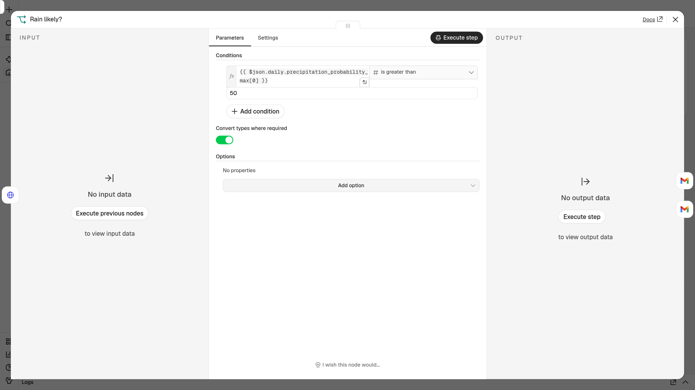
- افتح بريدك ← «☔ خذ المظلة اليوم!» أو «☀️ يوم جميل بلا مطر» مع الاحتمال ودرجات الحرارة.
- 🔁 جرّب الطريق الآخر: في Rain likely? غيّر
50إلى-1(فيصبح الشرط صحيحاً دائماً) ← Execute workflow ← يصلك البريد الآخر. أرجعها إلى 50 بعد التجربة. - ليعمل كل يوم وحده: اضغط Publish (في النسخ القديمة: مفتاح Active). وللتجربة الآن: اضغط Execute workflow.
- تأكّد من التوقيت: ⋯ ← Settings ← Timezone ← اختر منطقتك (مثلاً
Asia/AmmanأوAsia/RiyadhأوAsia/Dubai) ← Save.
⚠️ لا تريد رسالة كل صباح؟ أوقف النشر (Unpublish) من القائمة بجانب زر Publish.
🔔 الجزء 3.3 — تنبيه الطلبات الكبيرة · webhook-alert.json
القصة: متجرك «يرن جرس الباب» (Webhook) عند كل طلب. نريد تنبيهاً فقط إذا كان المبلغ أكبر من 100.
- استورد
webhook-alert.json. 👀 ستشاهد: New order (Webhook) ← Big order? (IF) ← true: Alert me / false: Small order.
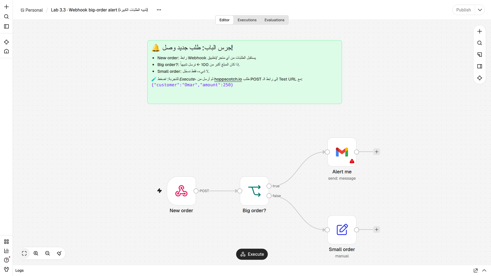
- افتح Alert me ← اختر مفتاح Gmail ← غيّر To إلى بريدك.
- افتح New order ← Webhook URLs ← تبويب Test URL ← اضغط على الرابط لنسخه.
👀 ستشاهد: رابطاً ينتهي بـ
/webhook-test/new-order(على n8n Cloud يبدأ باسم حسابك، وليسlocalhostكما في الصورة).
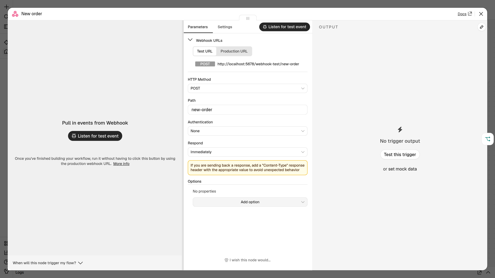
- أغلق العقدة واضغط Execute workflow. 👀 ستشاهد: العقدة New order في حالة انتظار/استماع (Listening for test event). لا تتأخر — الاستماع لفترة قصيرة ولطلب واحد فقط.
أرسل طلباً تجريبياً من hoppscotch.io
- في hoppscotch.io: غيّر الطريقة من GET إلى POST (القائمة على يسار شريط الرابط).
- الصق الـ Test URL في شريط الرابط.
- تحت الشريط افتح تبويب Body ← Content Type ← اختر application/json.
- الصق في مربع النص:
json
{"customer":"Omar","amount":250}
- اضغط Send.
👀 ستشاهد في hoppscotch:
200 OKورداً مثل{"message":"Workflow was started"}. - ارجع إلى n8n. 👀 ستشاهد: New order ← Big order? ← Alert me خضراء ✅. وفي بريدك: «💰 طلب كبير: 250 من Omar».
- 🔁 الطريق الآخر: اضغط Execute workflow مرة أخرى، وأرسل
{"customer":"Lina","amount":40}. 👀 ستشاهد: الطريق يذهب إلى Small order. افتحها ← OUTPUT فيه:طلب صغير (40) — لا حاجة لتنبيه.
💡 لاحظ: n8n يضع البيانات التي أرسلتها داخل
body، لذلك الشرط هو{{ $json.body.amount }}.
بديل: الطرفية (curl) — بعد الضغط على Execute workflow، ضع رابطك مكان TEST_URL:
- Mac / Linux (Terminal):
bash
curl -X POST "TEST_URL" -H "Content-Type: application/json" -d '{"customer":"Omar","amount":250}'
- Windows (Command Prompt / cmd):
bat
curl -X POST "TEST_URL" -H "Content-Type: application/json" -d "{\"customer\":\"Omar\",\"amount\":250}"
اجعله حقيقياً (اختياري): اضغط Publish ← استخدم Production URL (فيه /webhook/ بدل /webhook-test/) — يعمل دائماً بدون Execute، وهذا الرابط هو الذي تضعه في متجرك أو تطبيقك.
📰 الجزء 3.4 — ملخص الأخبار الصباحي · news-digest.json
القصة: أهم 5 عناوين من BBC عربي في رسالة واحدة مرتبة كل صباح 8:00.
- استورد
news-digest.json. 👀 ستشاهد: Every day 8:00 ← BBC Arabic RSS ← Top 5 ← Combine ← Send digest.
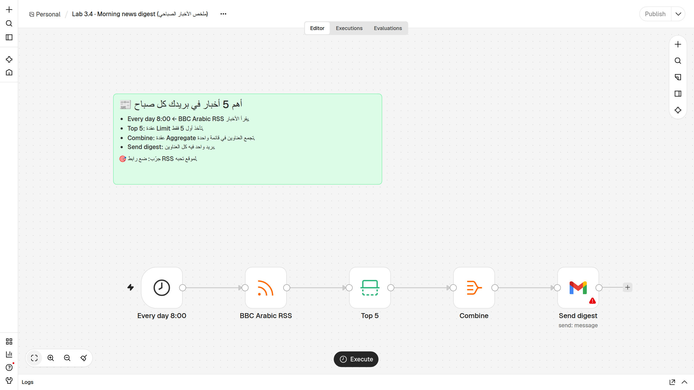
- افتح Send digest ← اختر مفتاح Gmail ← غيّر To إلى بريدك.
- اضغط Execute workflow.
👀 ستشاهد: الأرقام على الأسلاك:
1 item← حوالي26 items(العدد يتغيّر حسب اليوم) ←5 items←1 item. - افتح Top 5 ← OUTPUT: خمسة عناصر فقط (هذه عقدة Limit).
- افتح Combine ← OUTPUT ← عرض Schema: عنصر واحد فيه قائمة
titleوقائمةlink(هذه عقدة Aggregate — «السلة»). - افتح بريدك ← «📰 أخبار الصباح — تاريخ اليوم» وفيه خمسة عناوين مرقّمة وتحت كل عنوان رابطه.
- ليعمل كل يوم وحده: اضغط Publish. وللتجربة الآن: اضغط Execute workflow. (وتأكّد من Settings ← Timezone كما في 3.2.)
🔍 هكذا يبدو الخطأ إذا نسيت المفتاح — العقد قبل البريد خضراء، و Send digest حمراء:
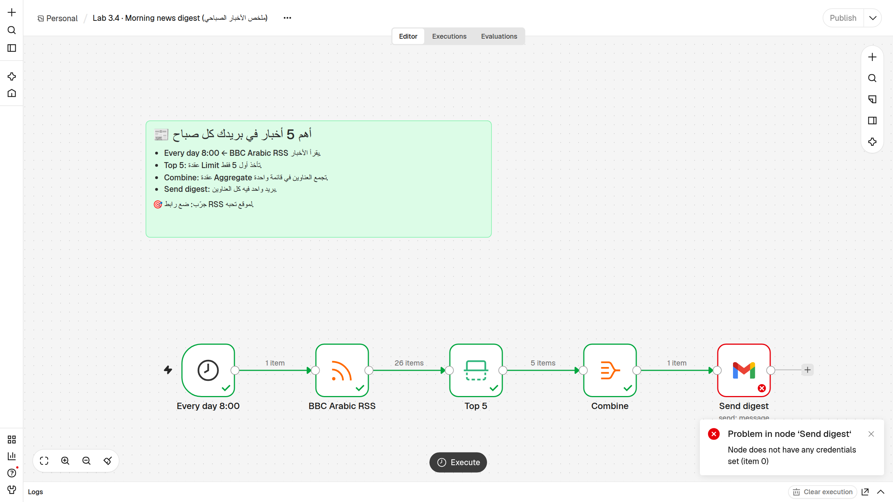
افتح العقدة الحمراء: INPUT سليم (5 عناوين)، و OUTPUT فيه رسالة الخطأ. الحل: اختر مفتاح Gmail وشغّل من جديد.
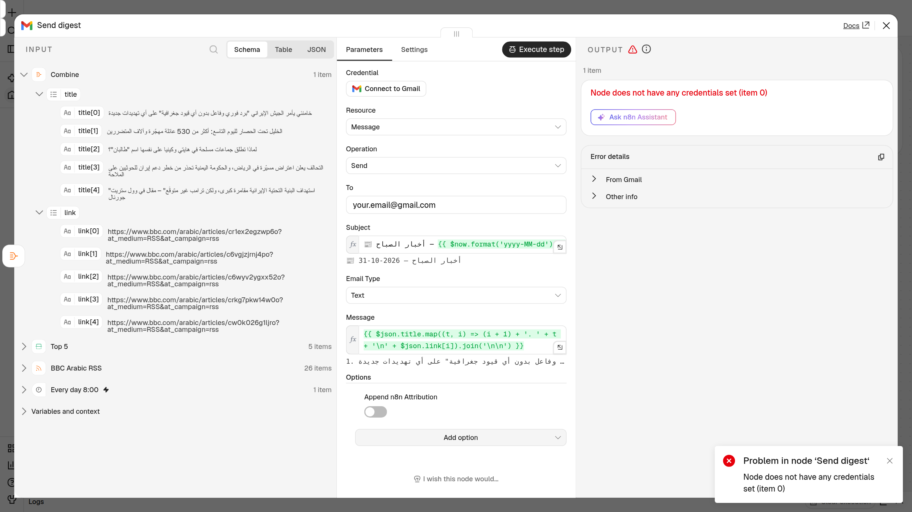
🚨 الجزء 3.5 — كاشف الدخان: تنبيه الأخطاء · error-alert.json
القصة: أتمتتك المنشورة تعمل وأنت نائم. إذا فشلت، تريد أن تعرف فوراً — مثل كاشف الدخان.
- استورد
error-alert.json. 👀 ستشاهد: عقدتين: When a workflow fails (Error Trigger) ← Email the error.
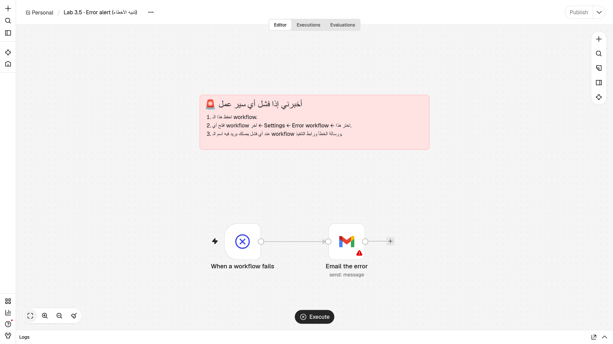
- افتح Email the error ← اختر مفتاح Gmail ← غيّر To إلى بريدك.
- احفظ (Ctrl+S) إذا لم يُحفظ تلقائياً. هذه الأتمتة لا تحتاج Publish.
- اضغط Execute workflow لتجربة البريد. 👀 ستشاهد: عند التشغيل اليدوي يعطي الـ Error Trigger بيانات مثال (اسم workflow ورسالة خطأ تجريبية)، فيصلك بريد «🚨 فشل: …». هذا يثبت أن البريد يعمل.
- اربطه بأتمتة أخرى: افتح أتمتة 3.4 (ملخص الأخبار) ← ⋯ (بجانب اسم سير العمل، أعلى اليسار) ← Settings ← Error workflow ← اختر Lab 3.5 · Error alert (تنبيه الأخطاء) ← Save.
- كرّر الخطوة 5 لكل أتمتة منشورة (3.2، 3.3، …).
⚠️ مهم: «الكاشف» يرنّ عند فشل التشغيل التلقائي (بعد Publish: موعد Schedule أو طلب على Production URL). عند الضغط على Execute workflow أنت ترى الخطأ أمامك على الشاشة، فلا يُرسَل بريد.
أين أجد إعدادات الخطأ لكل عقدة؟ افتح أي عقدة ← تبويب Settings (بجانب Parameters):
| الإعداد | ماذا يحدث؟ |
|---|---|
| On Error → Stop Workflow | يتوقف كل شيء (الافتراضي). |
| On Error → Continue | يكمل، ويمرّر الخطأ كبيانات للعقدة التالية. |
| On Error → Continue (using error output) | يظهر مخرج ثانٍ للأخطاء لتبني طريقاً بديلاً. |
| Retry On Fail | يعيد المحاولة تلقائياً (Max Tries / Wait Between Tries). |
🎉 النتيجة المتوقعة / Expected result
- ☐ 3.1: سطر جديد في الجدول + بريد «📩 رسالة جديدة من …».
- ☐ 3.2: بريد واحد فقط: ☔ أو ☀️، فيه احتمال المطر ودرجات الحرارة. (وجرّبت الطريق الآخر.)
- ☐ 3.3: طلب 250 ← بريد «💰 طلب كبير»؛ طلب 40 ← Small order بلا بريد.
- ☐ 3.4: بريد واحد فيه 5 عناوين مرقّمة مع روابطها.
- ☐ 3.5: بريد خطأ تجريبي، والكاشف مربوط بأتمتة 3.4 من Settings ← Error workflow.
🛠️ إذا واجهت مشكلة / Troubleshooting
| المشكلة (Symptom) | السبب المحتمل | الحل (Fix) |
|---|---|---|
عقدة حمراء: Node does not have any credentials set |
لم تختر مفتاحاً لهذه العقدة | افتح العقدة ← Credential ← اختر المفتاح أو Connect to Gmail ← شغّل من جديد. تذكّر: في 3.2 عقدتا Gmail. |
خطأ 401 / Unauthorized / invalid_grant من Google |
المفتاح انتهى أو سُحب الإذن | Overview ← Credentials ← افتح المفتاح ← Sign in with Google مرة أخرى. |
خطأ 403 / Insufficient Permission |
لم تضع علامة على كل مربعات الصلاحيات عند الربط | أعد الربط، وضع علامة على كل المربعات ثم Allow. |
| زر Sign in with Google يرفض أو يقول إن المسؤول منع التطبيق | حساب عمل/مؤسسة يمنع التطبيقات الخارجية | استخدم حساب Gmail شخصياً. |
البيانات في أعمدة خاطئة أو ظهرت أعمدة جديدة Name |
عناوين الأعمدة لا تطابق أسماء الحقول تماماً | السطر الأول يجب أن يكون بالضبط Name Email Message (حروف كبيرة، بلا مسافات زائدة). |
ظهرت أعمدة submittedAt و formMode |
n8n يضيف الحقول التي لا عمود لها | طبيعي. أو: Options ← Handling extra fields ← Ignore Them. |
| الجدول لا يظهر في قائمة Document | جدول في حساب Google آخر | اربط نفس الحساب، أو اختر By URL والصق رابط الجدول. |
| النموذج لا يفتح بعد Execute | المتصفح منع النافذة المنبثقة | انسخ Test URL من عقدة Contact form والصقه في تبويب جديد. |
Webhook يرد بخطأ 404 (webhook … is not registered) |
لم تضغط Execute قبل الإرسال، أو انتهى الاستماع، أو استُخدم الطلب الواحد | اضغط Execute workflow ثم أرسل فوراً. أرسل طلباً واحداً لكل Execute. |
404 مع Production URL |
الأتمتة غير منشورة، أو الرابط خطأ | اضغط Publish. تأكّد أن الرابط فيه /webhook/new-order (وليس -test). |
404 رغم أن n8n يستمع |
الطريقة GET بدل POST، أو خطأ في كتابة المسار | اختر POST في hoppscotch. انسخ الرابط بالضغط عليه بدل كتابته. |
| الطلب 250 ذهب إلى false | الـ Body أُرسل كنص وليس JSON، فلم يُقرأ amount |
في hoppscotch: Body ← Content Type ← application/json. افتح New order ← OUTPUT وتأكّد من وجود body.amount. |
| hoppscotch يظهر خطأ شبكة / CORS | المتصفح منع الطلب | جرّب مرة أخرى، أو من إعدادات hoppscotch اختر Interceptor ← Proxy، أو استخدم curl. |
| لم يصل بريد الطقس/الأخبار في الموعد | الأتمتة غير منشورة، أو المنطقة الزمنية مختلفة | اضغط Publish. ⋯ ← Settings ← Timezone ← اختر منطقتك. |
| عدّلت أتمتة منشورة لكن التشغيل التلقائي ما زال قديماً | التعديل لم يُنشر بعد | اضغط Publish مرة أخرى بعد كل تعديل. |
| البريد لا يظهر في الوارد | ذهب إلى Spam / الرسائل غير المرغوب فيها | افتح Spam ← Not spam. |
RSS: خطأ أو 0 items |
الموقع لا يرد مؤقتاً، أو الرابط خطأ | جرّب بعد دقيقة، وتأكّد من الرابط https://feeds.bbci.co.uk/arabic/rss.xml. |
بريد الملخص فيه خطأ مثل Cannot read properties of undefined |
غيّرت Combine فلم يعد فيها title و link |
تأكّد أن Combine تجمع الحقلين title و link. |
| بريد الخطأ (3.5) لا يصل أبداً | الفشل كان أثناء Execute يدوي، أو لم تختر Error workflow | الكاشف يعمل للتشغيل التلقائي فقط. تأكّد من Settings ← Error workflow في الأتمتة الأخرى. |
قائمة الفحص السريعة: هل اشتغل المُشغِّل؟ ← افتح أول عقدة حمراء واقرأ الرسالة ← افحص INPUT ← ثبّت البيانات (Pin data 📌) ← جرّب عقدة واحدة (Execute step) ← راجع تبويب Executions.
🚀 تحدّي / Challenges
ابدأ بالسهل ⭐ ثم انتقل للأصعب ⭐⭐⭐.
3.1 · نموذج التواصل
- ⭐ أضف حقلاً جديداً Phone في Contact form (Add Form Element)، وعموداً
Phoneفي الجدول، وأضف الهاتف إلى رسالة Notify me. - ⭐⭐ رد تلقائي للزبون: أضف عقدة Gmail بعد Notify me؛ في To اكتب
{{ $('Contact form').item.json.Email }}وفي الموضوع «شكراً لتواصلك 🌷». - ⭐⭐⭐ أضف عقدة IF بعد Contact form: إذا كانت Message تحتوي (contains) كلمة «عاجل» ← أرسل البريد؛ وإلا ← احفظ في الجدول فقط.
3.2 · بريد الطقس
- ⭐ ضع إحداثيات مدينتك، وغيّر 50 إلى 30.
- ⭐⭐ غيّر الموعد إلى 6:30 (في Every day 7:00: Trigger at Hour = 6 و Trigger at Minute = 30)، وغيّر اسم العقدة ليطابق الموعد.
- ⭐⭐⭐ استبدل IF بعقدة Switch بثلاثة طرق: مطر (> 50٪)، حر شديد (
{{ $json.daily.temperature_2m_max[0] }}> 35) ← «اشرب ماء كثيراً»، وإلا ← «يوم جميل».
3.3 · تنبيه الطلبات
- ⭐ أرسل طلباً بمبلغ 40 ثم بمبلغ 100 بالضبط — أي طريق؟ لماذا؟ ثم غيّر الحد من 100 إلى 500.
- ⭐⭐ في طريق false أضف Google Sheets (Append) لتسجيل كل الطلبات الصغيرة في جدول.
- ⭐⭐⭐ استبدل IF بـ Switch: أكبر من 500 ← «VIP 👑»، أكبر من 100 ← «طلب كبير»، والباقي ← «طلب صغير».
3.4 · ملخص الأخبار
- ⭐ اجعلها Top 3 (في عقدة Top 5 غيّر Max Items، وغيّر اسم العقدة).
- ⭐⭐ ضع رابط RSS لموقع آخر، مثلاً BBC بالإنجليزية:
https://feeds.bbci.co.uk/news/world/rss.xml(أو ابحث عن «اسم الموقع RSS»). - ⭐⭐⭐ أضف عقدة Filter قبل Top 5 تُبقي فقط الأخبار التي يحتوي عنوانها (
title) على كلمة تهمّك.
3.5 · كاشف الدخان
- ⭐ أضف إلى الرسالة رقم التنفيذ
{{ $json.execution.id }}أو الوقت{{ $now }}. - ⭐⭐ اربط الكاشف بكل أتمتتك المنشورة (Settings ← Error workflow).
- ⭐⭐⭐ اختبار حقيقي: انسخ أتمتة 3.4، غيّر رابط RSS إلى رابط خاطئ (مثل
https://feeds.bbci.co.uk/arabic/wrong.xml)، اجعل المُشغِّل كل دقيقة، اربط Error workflow، ثم Publish. انتظر دقيقة أو اثنتين ← يصلك بريد الخطأ 🚨. لا تنسَ Unpublish بعدها!
🎁 إضافي: إعدادات الخطأ
- في أتمتة 3.4 افتح BBC Arabic RSS ← Settings ← فعّل Retry On Fail (مثلاً Max Tries = 3). ما فائدة ذلك إذا كان الموقع بطيئاً أحياناً؟